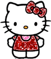

—— 困了就睡觉, 醒来就微笑。
~Yaya小档案~
我的名字：田飞亚
我的小名：丫丫、肥鸭...
生肖：monkey
星座：白羊座
最爱吃的食物：**
最喜欢的颜色：**
最喜欢做的事：**
最大的梦想：***
我的人生格言：****
~~~~~~~~~~~~~~~~~~~~~~~~~~~~~
联系我：
QQ：251696781
Email：www.afrai@qq.com
是时光遗失了我们，还是我们丢弃了时光。。。

- 情况不同
一只小猪、一只绵羊和一头乳牛，被关在同一个畜栏里。有一次，牧人捉住小猪，他大声号叫，猛烈地抗拒。绵羊和乳牛讨厌它的号叫，便说：“他常常捉我们，我们并不大呼小叫。”小猪听了回答道：“捉你们和捉我完全是两回事，他捉你们，只是要你们的毛和乳汁，但是捉住我，却是要我的命呢! ” - 靠自己
小蜗牛问妈妈：为什么我们从生下来，就要背负这个又硬又重的壳呢？
妈妈：因为我们的身体没有骨骼的支撑，只能爬，又爬不快。所以要这个壳的保护！
小蜗牛：毛虫姊姊没有骨头，也爬不快，为什么她却不用背这个又硬又重的壳呢？
妈妈：因为毛虫姊姊能变成蝴蝶，天空会保护她啊。
小蜗牛：可是蚯蚓弟弟也没骨头爬不快，也不会变成蝴蝶他什么不背这个又硬又重的壳呢？
妈妈：因为蚯蚓弟弟会钻土, 大地会保护他啊。
小蜗牛哭了起来：我们好可怜，天空不保护，大地也不保护。
蜗牛妈妈安慰他：所以我们有壳啊！我们不靠天，也不靠地，我们靠自己。 - 鲨鱼与鱼
有人做过实验，将一只最凶猛的鲨鱼和一群热带鱼放在同一个池子，然后用强化玻璃隔开，最初，鲨鱼每天不断冲撞那块看不到的玻璃，耐何这只是徒劳，它始终不能过到对面去，而实验人员每天都有放一些鲫鱼在池子里，所以鲨鱼也没缺少猎物，只是它仍想到对面去，想尝试那美丽的滋味，每天仍是不断的冲撞那块玻璃，它试了每个角落，每次都是用尽全力，但每次也总是弄的伤痕累累，有好几次都浑身破裂出血。
 - 神迹
法国一个偏僻的小镇，据传有一个特别灵验的水泉，常会出现神迹，可以医治各种疾病。有一天，一个拄着拐杖，少了一条腿的退伍军人，一跛一跛的走过镇上的马路，旁边的镇民带着同情的回吻说：“可怜的家伙，难道他要向上帝祈求再有一条腿吗?”这一句话被退伍的军人听到了，他转过身对他们说：“我不是要向上帝祈求有一条新的腿，而是要祈求他帮助我，叫我没有一条腿后，也知道如何过日子。”
试想：学习为所失去的感恩，也接纳失去的事实，不管人生的得与失，总是要让自已的生命充满了亮丽与光彩，不再为过去掉泪，努力的活出自己的生命。
持续了好一些日子，每当玻璃一出现裂痕，实验人员马上加上一块更厚的玻璃。后来，鲨鱼不再冲撞那块玻璃了，对那些斑斓的热带鱼也不再在意，好像他们只是墙上会动的壁画，它开始等着每天固定会出现的鲫鱼，然后用他敏捷的本能进行狩猎，好像回到海中不可一世的凶狠霸气，但这一切只不过是假像罢了，实验到了最后的阶段，实验人员将玻璃取走，但鲨鱼却没有反应，每天仍是在固定的区域游着它不但对那些热带鱼视若无睹，甚至于当那些鲫鱼逃到那边去，他就立刻放弃追逐，说什么也不愿再过去，实验结束了，实验人员讥笑它是海里最懦弱的鱼。
可是失恋过的人都知道为什么，它怕痛。
我们心中都曾经活着那样一个小小孩
曾经相信也曾经失望
学校是学习的地方 也是让孩子离开童稚的地方
学校是做梦的地方 也是许多人梦碎的地方
—— “夏至未至”